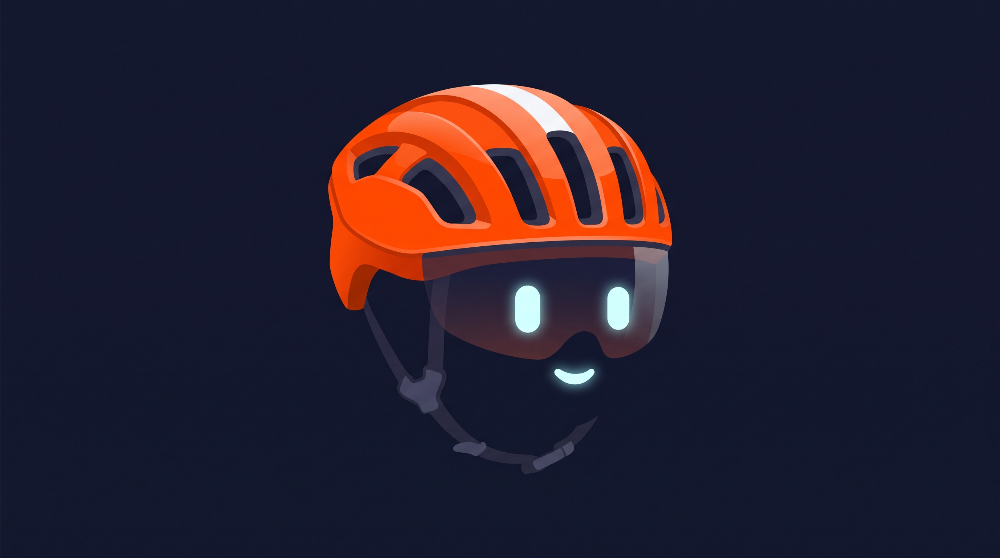
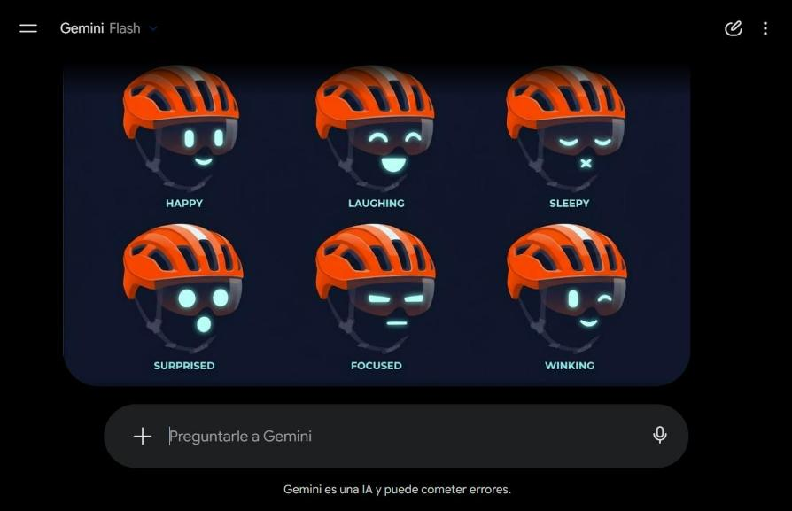
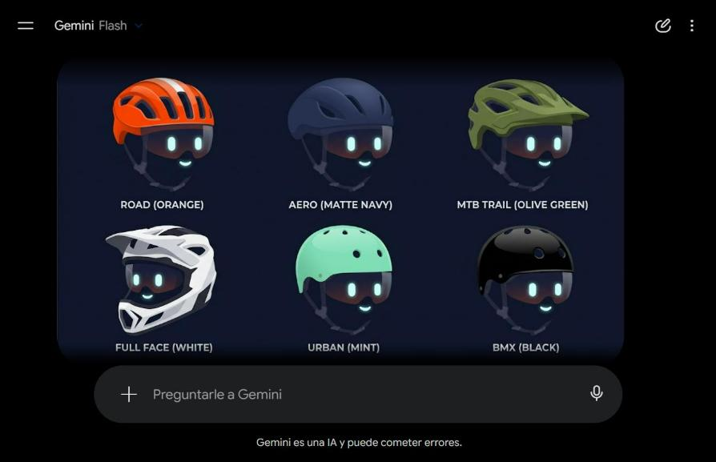
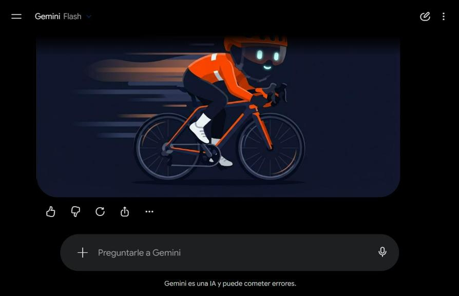

Libre Pedal · Pistero nuevo · generado con Gemini
Pistero, casco vivo
Un casco de ruta real es la cabeza y la visera oscura es la cara: los ojos y la sonrisa son luces LED. Referencias: Astro Bot (PlayStation), EVE (Pixar) y los cascos de Daft Punk. Todo lo de esta página salió de Gemini con prompts escritos a partir de esas referencias.





Lo que sigue (ya en curso):
- Pasar la cabeza a vector, por capas: cáscara (cambia de color con el armario), ventilaciones, franja, visera y LED (cambian con la expresión).
- Las 6 expresiones animadas, con parpadeo.
- Los 6 tipos de casco como piezas del armario.
- El cuerpo sobre la bici.